Waco, Texas · Aluminum Can Production Facility
$61,000,000 Design/Build aluminum can production and distribution facility.

Image: Google Earth view of the finished facility.
Project Overview
Design/Build program for a new aluminum can production plant with integrated distribution. CSC managed the design and engineering, day-to-day construction activities, scheduling, safety planning and procedures, and the bidding and buyout of the project. The building structure used concrete tilt-up panels with long-span steel bar joists and deck, supported by deep foundations to accommodate heavy process loads and wide clear spans. Throughout delivery, CSC coordinated with the Waco City building and zoning departments, organizing inspections and quality control to ensure a compliant, on-schedule turnover.
$61,000,000
Design/Build management
Manufacturing, distribution
Inspections and QA/QC with Waco
Construction Highlights
- Concrete tilt-up wall panels formed and cast on site, then lifted into place with crawler cranes.
- Large bay spacing with steel bar joists for unobstructed process floor layouts.
- Organized site logistics for panel casting beds, steel staging, and laydown to maintain schedule.
Photos
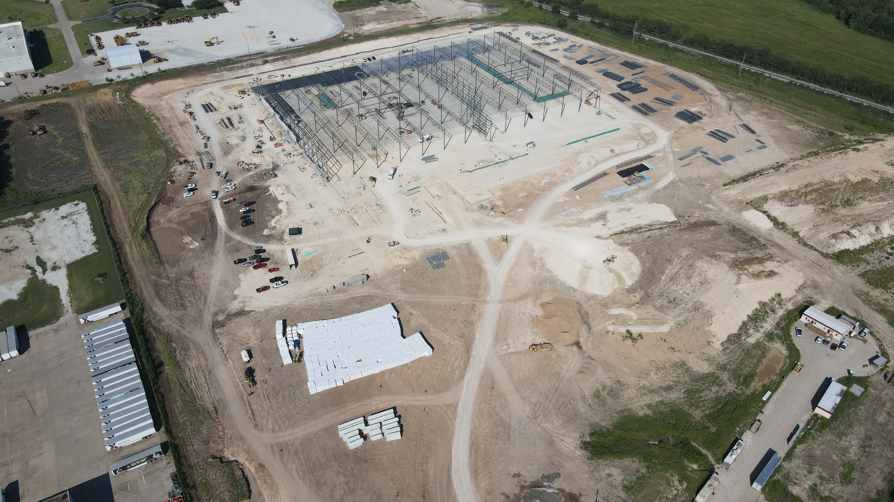
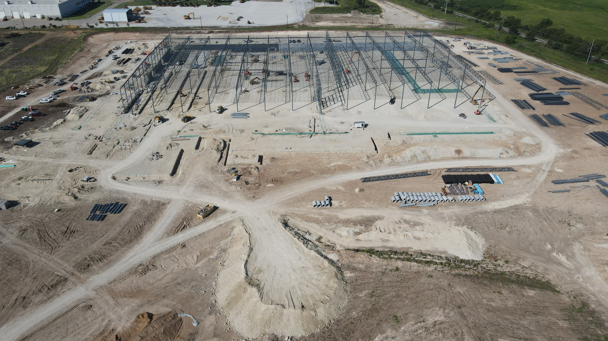
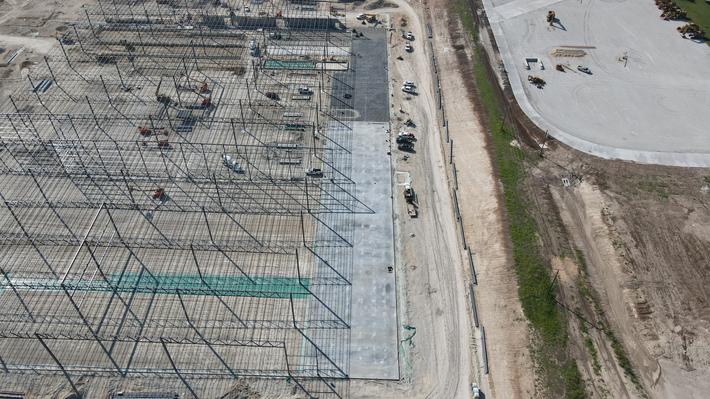
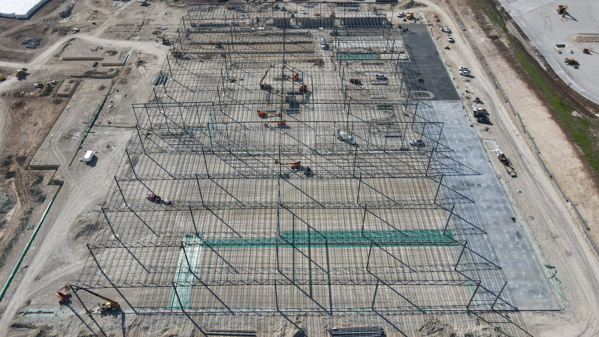
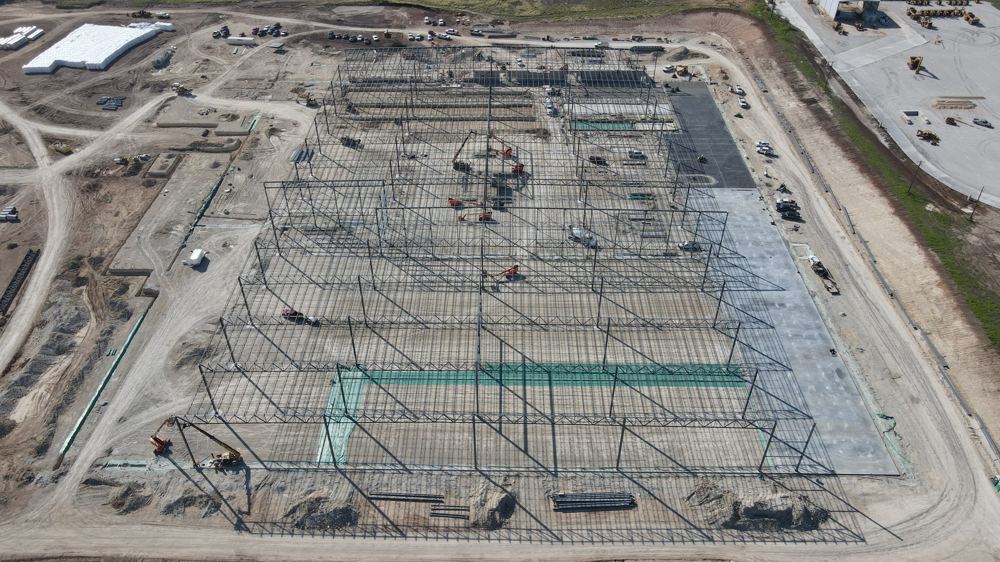
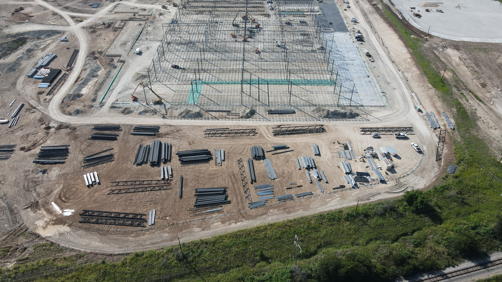
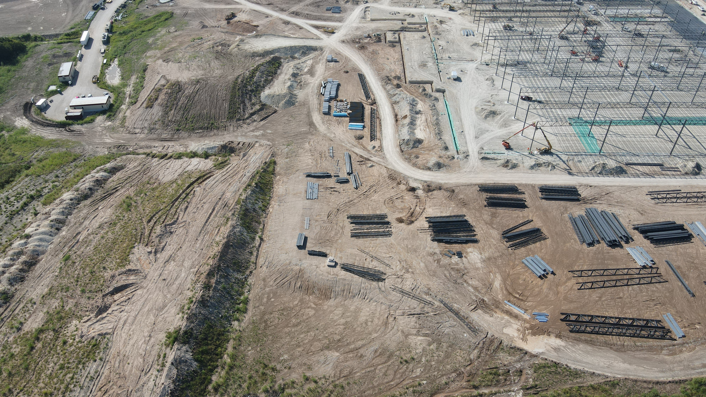
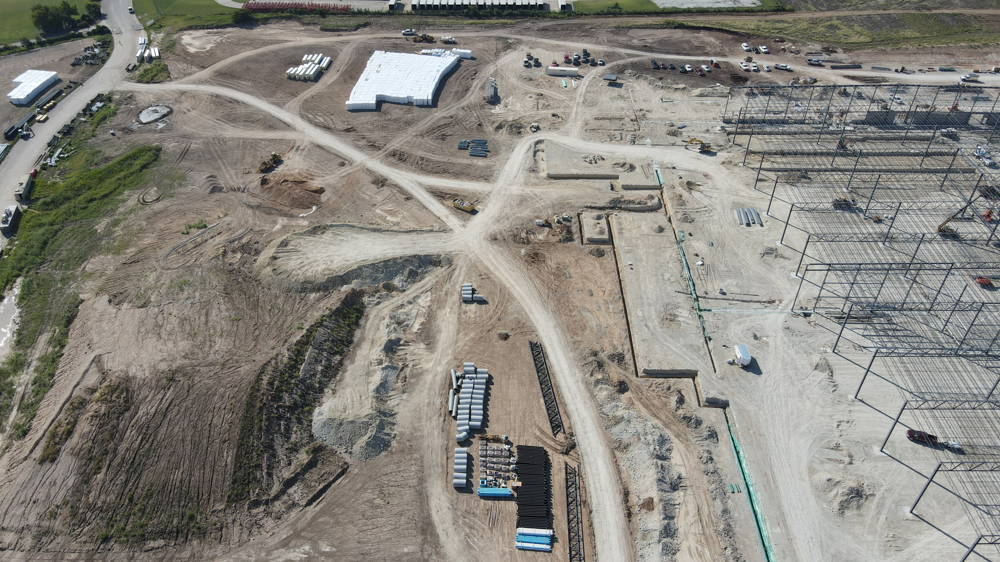
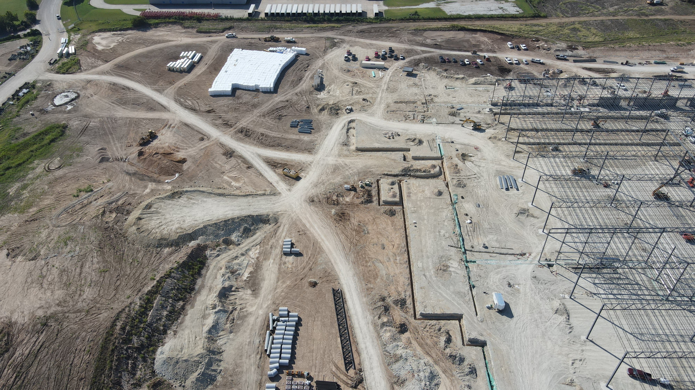
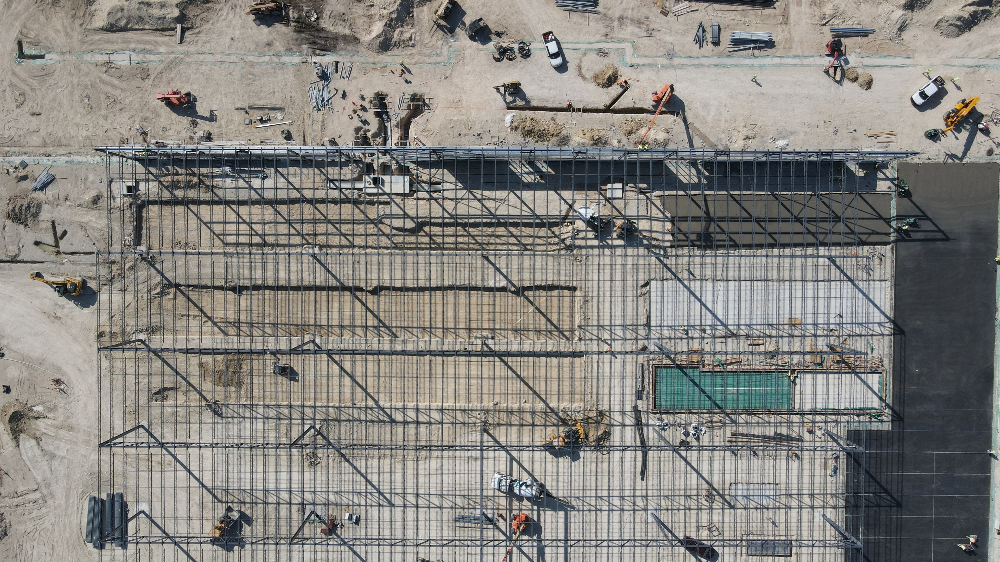
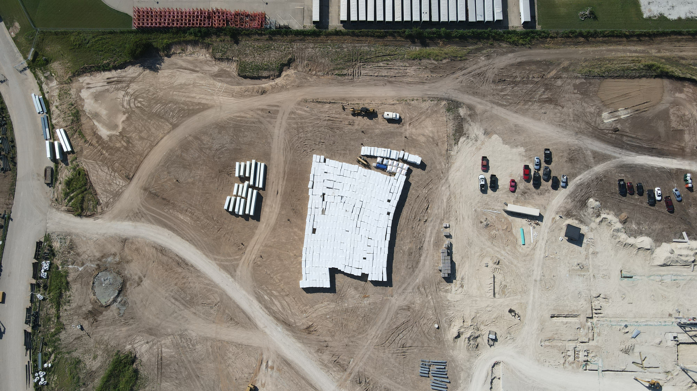
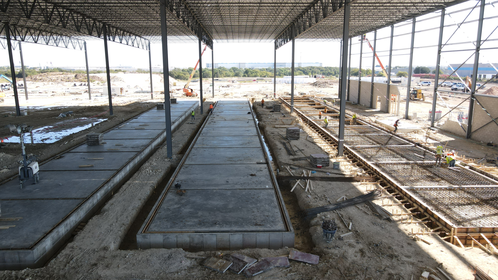
Location
1901 Wycon Drive, Waco, Texas 76712